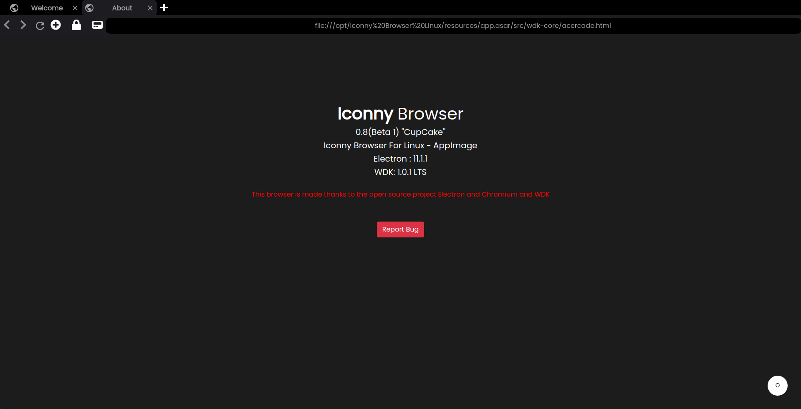
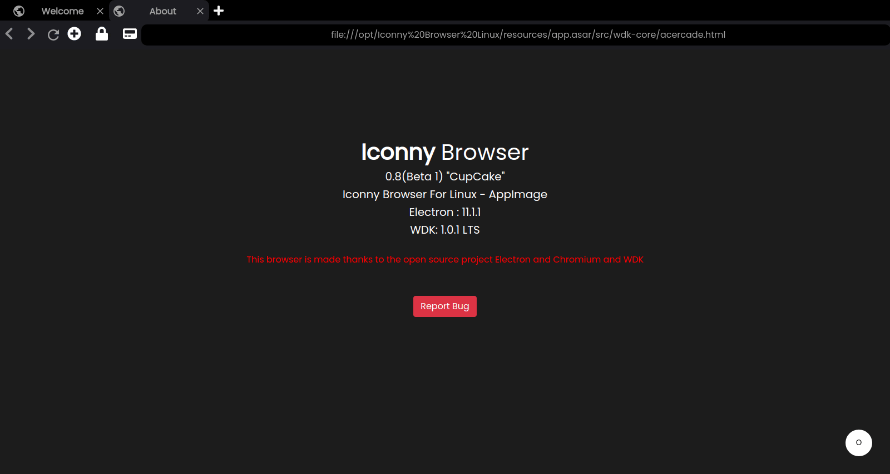
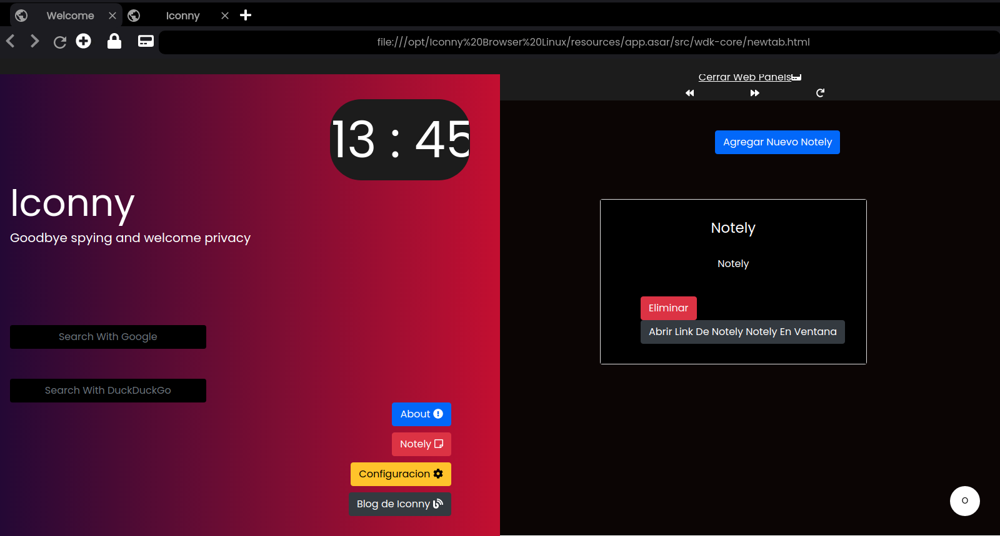
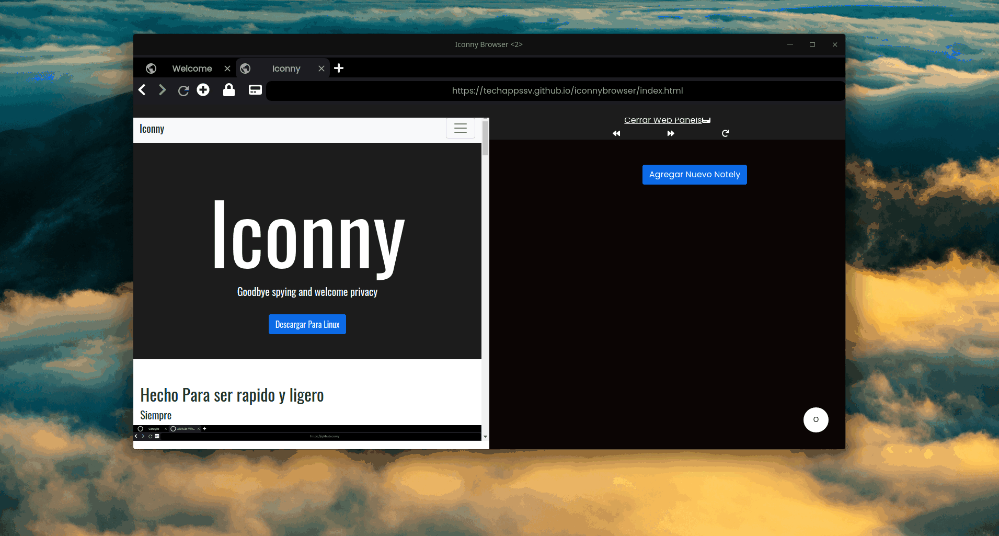

Iconny Browser Linux "CupCake" 0.08 Beta 1
Escrito por Admin 12/01/2021

Nos complace anunciar que hemos sacado la version 0.08 Beta con nombre en codigo o mejor dicho nombre de desarrollo "CupCake" este nombre es porque "CupCake"
no esta a enfocada tanto a traer funciones nuevas en si esta a incluir las funciones basicas de todo navegador ademas de terminar de complementar a Coffe Cake
Novedades
Como primera novedad es que se ha incorporado un Menu Contextual que tendra el diseño del tema GTK o dependiendo del diseño nativo del sistema
en el que se use este tiene las funciones basicas esenciales

Menu Contextual Nativo
Como segunda novedad es que ahora se incluye una version especialmente hecha para los web panels de Notely

Notely En Web Panels
Tercera novedad y ultima novedad es que desde Notely para web panels se abre en una ventana los links esto es asi para hacer webapps

WebApps Con Notely
Ademas un cambio que no puede estar en las seccion de cambios menores es que el buscador de URL utiliza DuckDuckgo esto hemos hecho por los bangs
Consideramos que esta es una funcion muy interesante y por cual motivo gracia estos se puede buscar en una variedad de buscadores
por ejemplo para buscar en google !g (inserte busqueda) o !gi para buscar en GitHub
Tambien ya los repositorios de actualizaciones han sido actualizados
Otros cambios menores :
Correcion de errores en WDK 1.01 LTS en tipografias
Ahora se usa el icono predeteminado del electron-navigation
Esperamos que les guste estos nuevas funciones y cambios
Atte Administrador
Descargar La Version 0.08 Beta .deb
Ver Release En Github